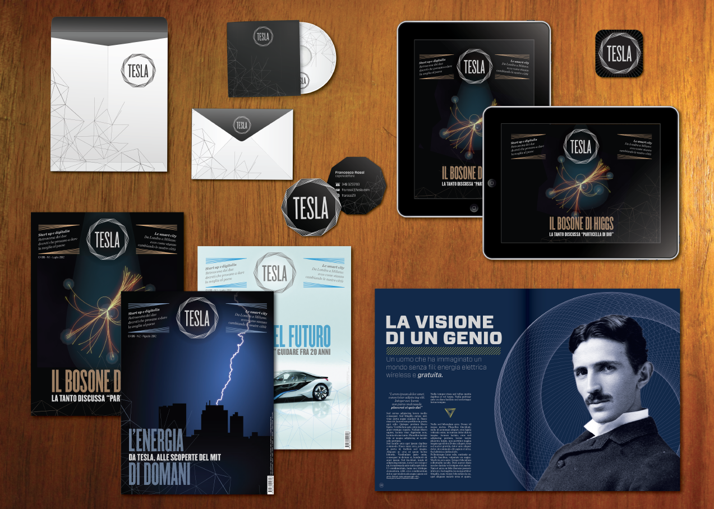
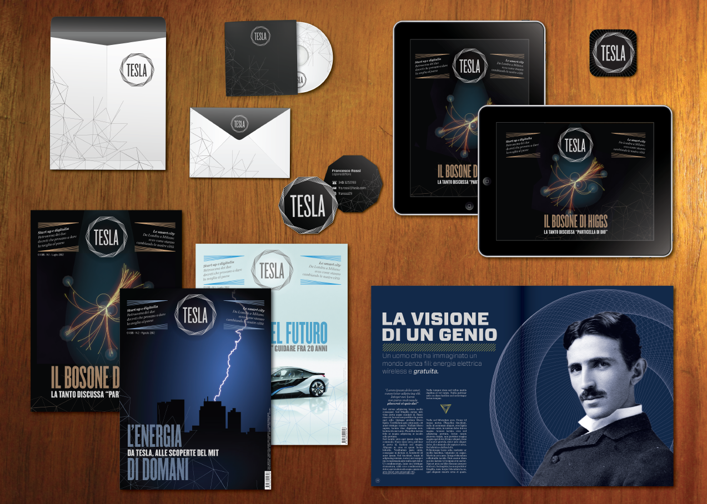

Tesla
A fictional scientific magazine
2012
Visual identity and corporate identity for a fictional scientific magazine, designed during a laboratory in Politecnico of Milan. We had to pick a character and build a brand around his name and the collective image of him. I choose Tesla a brilliant scientist who believed that human progress can be achieved through science and technology. My visual references were the beauty of math and generative design style.

 
